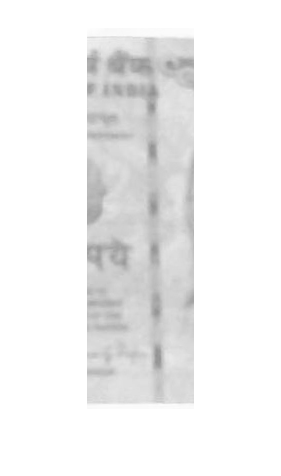

Contents
Resetting
clc;
clear all;
close all;
warning('off', 'all');
Input images
input = '../../Notes_Images/Database/rupee_100_2_';
inputFront = imread(strcat(input,'front_norm.jpg'));
inputBack = imread(strcat(input,'back_norm.jpg'));
inputFrontWhite = imread(strcat(input, 'front_white.jpg'));
inputBackWhite = imread(strcat(input, 'back_white.jpg'));
inputFrontUV = imread(strcat(input, 'front_uv.jpg'));
inputBackUV = imread(strcat(input, 'back_uv.jpg'));
index = 4;
Data
lengthInCM = [13.7 14.7 14.7 15.7 16.7 17.7];
widthInCM = [6.3 6.3 7.3 7.3 7.3 7.3];
denominations = {'10','20','50','100','500','1000'};
Classification
X = Classification(inputFront, inputBack)
X =
4
Pixel Ratio
[width(1), length(1), col] = size(inputFront);
[width(2), length(2), col] = size(inputBack);
pixelRatio = mean([mean([length(1)/lengthInCM(X) width(1)/widthInCM(X)])]);
paraErr = zeros(1, 9);
paraLegend = {'Watermark', 'Security Thread', 'Latent Image', 'Microlettering', 'Intaglio Printing', 'ID Mark', 'Fluorescence', 'Optically Variable Ink', 'See-Through Register'};
Reference Data
WMMeanReference = dlmread('Reference/Counterfeit/WMMean.dat');
WMStdReference = dlmread('Reference/Counterfeit/WMStd.dat');
RegisterMeanReference = dlmread('Reference/Counterfeit/RegisterMean.dat');
RegisterStdReference = dlmread('Reference/Counterfeit/RegisterStd.dat');
STMeanReference = dlmread('Reference/Counterfeit/STMean.dat');
STStdReference = dlmread('Reference/Counterfeit/STStd.dat');
UVMeanReference = dlmread('Reference/Counterfeit/UVMean.dat');
UVHueReference = dlmread('Reference/Counterfeit/UVHue.dat');
OVIHueReference = dlmread('Reference/Counterfeit/OVIHue.dat');
Area Information
watermarkArea = dlmread('Reference/Counterfeit/WatermarkArea.dat');
microletteringArea = dlmread('Reference/Counterfeit/MicroletteringArea.dat');
registerArea = dlmread('Reference/Counterfeit/RegisterArea.dat');
IDMarkArea = dlmread('Reference/Counterfeit/IDMarkArea.dat');
securityThreadArea = dlmread('Reference/Counterfeit/SecurityThreadArea.dat');
latentImageArea = dlmread('Reference/Counterfeit/LatentImageArea.dat');
OVIArea = dlmread('Reference/Counterfeit/OVIArea.dat');
intaglioArea = dlmread('Reference/Counterfeit/IntaglioArea.dat');
Register Data
registerBWsizeScanned = {[10 90], [0 150], [120 270], [10 100], [80 160], [80 140]};
registerBWsizeDatabase = {[90 140], [0 150], [10 100], [80 210], [20 100], [2 100]};
registerObjNum = [3 4 4 5 6 7];
registerBWThreshScanned = [0.9 0.75 0.8 0.86 0.77 0.8705];
registerBWThreshDatabase = [0.5 0.89 0.67 0.775 0.5 0.85];
Parameters
ID Mark
if X~=1
if X ~= Shape(imcrop(inputFront, IDMarkArea(X,:)*pixelRatio))
paraErr(6) = 0.1;
end
end
Watermark
grayImg = rgb2gray(inputFrontWhite);
xx = imcrop(grayImg, watermarkArea(X,:)*pixelRatio);
WMMean = mean2(xx);
WMErr(1) = abs(WMMean - WMMeanReference(X))/WMMeanReference(X);
WMStd = std2(imcrop(grayImg, watermarkArea(X,:)*pixelRatio));
WMErr(2) = abs(WMStd - WMStdReference(X))/WMStdReference(X);
paraErr(1) = mean(WMErr);
Register - mean
grayImg = rgb2gray(inputFrontWhite);
xx = imcrop(grayImg, registerArea(X,:)*pixelRatio);
RegisterMean = mean2(xx);
RegisterErr = abs(RegisterMean - RegisterMeanReference(X))/RegisterMeanReference(X);
paraErr(9) = mean(RegisterErr);
Fluorescence
grayImg = rgb2gray(inputFrontUV);
UVMean = mean2(grayImg);
UVErr(1) = abs(UVMean - UVMeanReference(X))/UVMeanReference(X);
hueImg = rgb2hsv(inputFrontUV);
UVHue = mean2(hueImg(:,:,1));
UVErr(2) = abs(UVHue - UVHueReference(X))/UVHueReference(X);
paraErr(7) = mean(UVErr);
Security Thread
xx = imcrop(inputFrontWhite, securityThreadArea(X,:)*pixelRatio);
grayImg = rgb2gray(xx);
figure(); imshow(grayImg);
STMean = mean2(grayImg);
STErr(1) = abs(STMean - STMeanReference(X))/STMeanReference(X);
STStd = std2(grayImg);
STErr(2) = abs(STStd - STStdReference(X))/STStdReference(X);
paraErr(2) = mean(STErr);

OVI
hueImg = rgb2hsv(imcrop(inputFrontWhite, OVIArea(X,:)*pixelRatio));
OVIHue = mean2(hueImg(:,:,1));
paraErr(8) = abs(OVIHue - OVIHueReference(X))/OVIHueReference(X);
Register - count
imgTest = imcrop(inputFront, registerArea(X,:)*pixelRatio);
figure(); imshow(imgTest);
imgTest = rgb2gray(imgTest);
imgTest = im2bw(imgTest, registerBWThreshDatabase(X));
imgTest = ~imgTest;
figure(); imshow(imgTest);
regProps = regionprops(imgTest, 'Area');
regProps.Area
imgTest = bwareafilt(imgTest, registerBWsizeDatabase{X});
figure(); imshow(imgTest);
regProps = regionprops(imgTest, 'Area');
regProps.Area
registerNumber = numel(regProps)
if(registerNum\ber ~= registerObjNum(X))
paraErr(9) = 0.1;
end
n=0;
ans =
113
ans =
12
ans =
2
ans =
63
ans =
26
ans =
2
ans =
6
ans =
44
ans =
3
ans =
113
registerNumber =
1
Undefined function or variable 'registerNum'.
Error in Verification (line 138)
if(registerNum\ber ~= registerObjNum(X))
Latent Image
threshold = graythresh(inputFront);
xx = imcrop(inputFront,latentImageArea(X,:)*pixelRatio);
img2 = im2bw(rgb2gray(xx),threshold);
f=im2double(img2);
choice=2;
H=[-1 -1 -1; 2 2 2;-1 -1 -1];
V=[-1 2 -1;-1 2 -1;-1 2 -1];
P45=[-1 -1 2;-1 2 -1;2 -1 -1];
M45=[2 -1 -1;-1 2 -1;-1 -1 2];
switch choice
case 1
DH=imfilter(f,H);
imshow(DH);
case 2
DV=imfilter(f,V);
case 3
D45=imfilter(f,P45);
imshow(D45);
case 4
DM45=imfilter(f,M45);
imshow(DM45);
end
Final Parameter Error
paraErr
if(max(paraErr)>=0.2)
disp('Counterfeit');
end